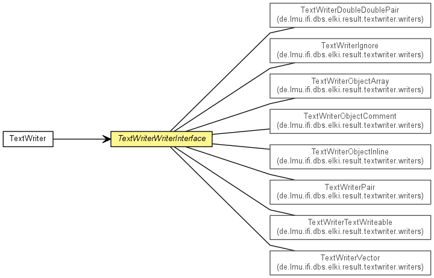

de.lmu.ifi.dbs.elki.result.textwriter
Class TextWriterWriterInterface<O>
java.lang.Object
 de.lmu.ifi.dbs.elki.result.textwriter.TextWriterWriterInterface<O>
de.lmu.ifi.dbs.elki.result.textwriter.TextWriterWriterInterface<O>
- Type Parameters:
O - Object type (usually the class itself)
- Direct Known Subclasses:
- TextWriterDoubleDoublePair, TextWriterObjectArray, TextWriterObjectComment, TextWriterObjectInline, TextWriterPair, TextWriterTextWriteable, TextWriterTriple, TextWriterVector
public abstract class TextWriterWriterInterface<O>
- extends Object

Base class for object writers.
| Methods inherited from class java.lang.Object |
clone, equals, finalize, getClass, hashCode, notify, notifyAll, toString, wait, wait, wait |
TextWriterWriterInterface
public TextWriterWriterInterface()
write
public abstract void write(TextWriterStream out,
String label,
O object)
throws UnableToComplyException,
IOException
- Write a given object to the output stream.
- Parameters:
out - Output streamlabel - Label to prefixobject - object to output
- Throws:
UnableToComplyException - on errors
IOException - on IO errors
writeObject
public final void writeObject(TextWriterStream out,
String label,
Object object)
throws UnableToComplyException,
IOException
- Non-type-checking version.
- Parameters:
out - Output streamlabel - Label to prefixobject - object to output
- Throws:
UnableToComplyException - on errors
IOException - on IO errors